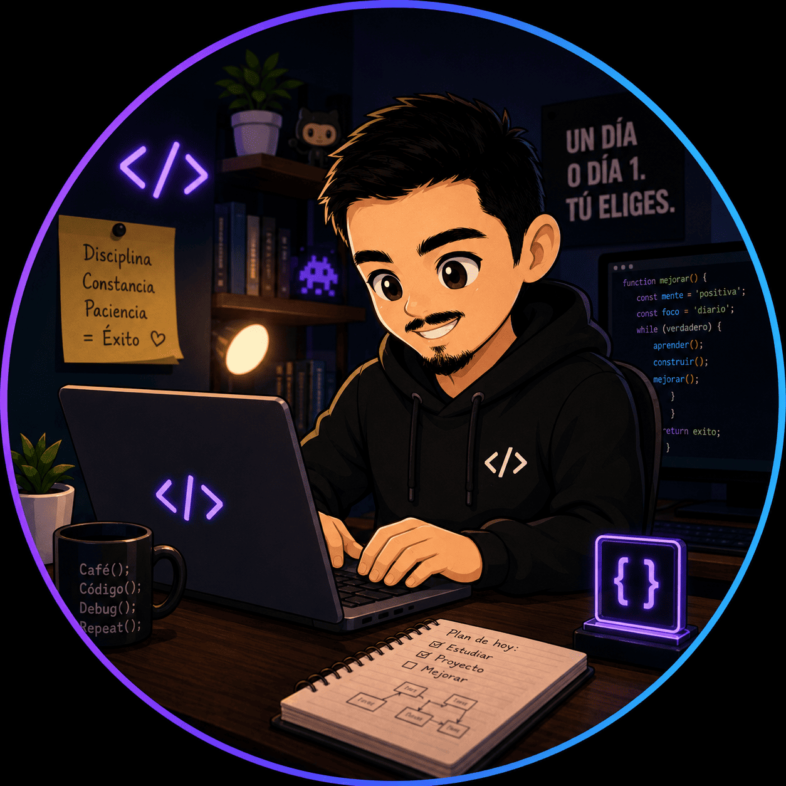

Yasiel Llanos
Yanes
Desarrollador enfocado en soluciones backend robustas, arquitecturas limpias y aplicaciones multiplataforma eficientes.

Habilidades y Stack Técnico
Tecnologías, herramientas y metodologías aplicadas en mis proyectos
Backend & Lógica
- Java
- Spring Boot (APIs REST)
- Seguridad y Buenas Prácticas
Bases de Datos & Persistencia
- PostgreSQL & MySQL
- Diseño relacional y consultas SQL
- Manejo de datos JSON / XML
Móvil & Interfaces
- JavaFX & Interfaces gráficas
- HTML5 & CSS3 moderno
- JavaScript para web
Herramientas & Entorno
- Git & GitHub (Control de versiones)
- Linux / WSL & Terminal
- IntelliJ IDEA, VS Code & Maven
Lenguajes detectados en mis repositorios
Cargando lenguajes...
Sobre mí
Conoce más sobre mi perfil, enfoque técnico y principios de desarrollo
Formación y Enfoque Backend
Estudiante de 2º de Desarrollo de Aplicaciones Multiplataforma en el IES Puerto de la Cruz Telesforo Bravo. Especial interés en lógica de negocio robusta, APIs REST, servicios concurrentes y acceso eficiente a bases de datos relacionales.
- Spring Boot 3 & Security
- Docker & Contenedores
- Optimización de consultas SQL
Código autodocumentado, modular y fácil de mantener.
Commits atómicos, ramas claras y control de versiones riguroso.
Análisis crítico de problemas antes de escribir la primera línea.
Mi trayectoria
Mi evolución académica y profesional a lo largo de los años
Actualmente cursando segundo año, profundizando en desarrollo de aplicaciones multiplataforma, desarrollo móvil, servicios y procesos concurrentes, y acceso a datos.
Bachillerato con orientación tecnológica, donde adquirí bases en matemáticas, tecnología, despertando mi interés por el mundo del desarrollo software.
Primeros contactos con la informática y la tecnología, participando en talleres de robótica y actividades extraescolares relacionadas con la programación.
Proyectos destacados
Repositorios con topic "showcase" en GitHub
Repositorios
Contacto
¿Hablamos? Estoy disponible para colaboraciones y oportunidades
Ubicación
Tenerife, Islas Canarias